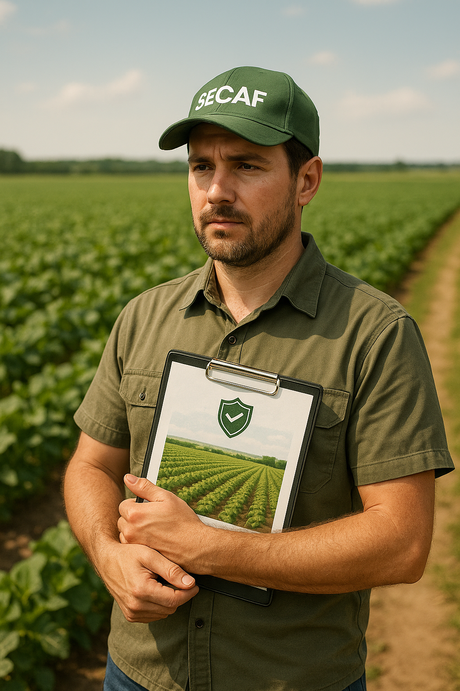

Seguros Agrícolas
O seguro agrícola é uma ferramenta essencial para a proteção da produção rural contra perdas decorrentes de fatores climáticos, pragas, doenças e outros riscos...
Tipos de Seguros Agrícolas
- Seguro de Produtividade: Garante a produção esperada com base em médias históricas ou zoneamento agrícola.
- Seguro de Faturamento: Protege a receita financeira esperada considerando produção e preço de mercado.
- Seguro Paramétrico: Baseado em parâmetros climáticos (ex: chuvas abaixo de um índice mínimo).
- Seguro de Custeio: Cobre os custos de produção como sementes, insumos e tratos culturais.
- Seguro Pecuário: Voltado à criação animal, com cobertura para morte por acidente, doenças ou eventos climáticos.
- Seguro Aquícola: Protege produções em ambientes aquáticos, como tanques-rede ou viveiros escavados.
Programa de Subvenção ao Prêmio do Seguro Rural (PSR)
O Governo Federal subsidia parte do custo do prêmio do seguro rural, possibilitando maior adesão dos produtores...
Como Contratar
A SECAF realiza análise técnica da propriedade e da cultura, elabora simulações de apólices...
Parceiros
Trabalhamos com seguradoras como: Mapfre, Tokio Marine, Porto, Swiss Re, Essor e Fairfax...